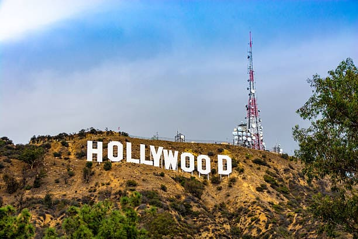
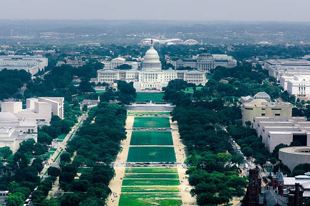
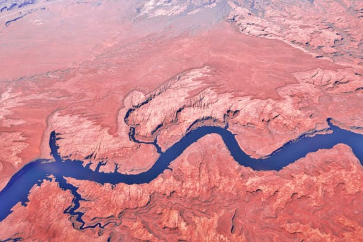

USA - Land of Opportunities and Diversity

Introduction
The United States of America is a vast and diverse country with iconic landmarks, natural wonders, and vibrant cities. From bustling metropolises to serene national parks, the USA offers a wide range of experiences for travelers.
Visitors can explore New York City’s urban energy, the Grand Canyon’s breathtaking vistas, Washington D.C.’s historic monuments, and the sunny beaches of California and Florida. Its mix of cultures, landscapes, and history makes the USA a unique travel destination.
Quick Facts
- Capital: Washington, D.C.
- Population: Approximately 333 million
- Language: English (de facto)
- Currency: United States Dollar (USD)
- Best Time to Visit: Spring (April-June) and Autumn (September-November)
Explore Major Destinations
Jump to a specific destination
\r\n
New York City
Region: Northeastern USA
New York City is a global hub of culture, finance, and entertainment. Known as "The Big Apple," it boasts world-famous landmarks, museums, theaters, and diverse cuisine.
Visit Times Square, Central Park, and the iconic Statue of Liberty. NYC offers Broadway shows, art galleries, and vibrant neighborhoods that reflect the city’s cosmopolitan energy.
Must-See Attractions
- Statue of Liberty - Iconic symbol of freedom
- Central Park - Expansive urban park with trails and lakes
- Times Square - Bustling entertainment and commercial hub
- Empire State Building - Historic skyscraper with observation decks
- Metropolitan Museum of Art - World-renowned art collection
Back to top
Los Angeles

Region: California
Los Angeles, known for Hollywood and its entertainment industry, is a sprawling city with beaches, cultural landmarks, and vibrant nightlife. It’s a haven for film and music enthusiasts.
Explore Hollywood Boulevard, Griffith Observatory, Santa Monica Pier, and Venice Beach. LA offers theme parks, shopping, and culinary experiences reflecting global influences.
Must-See Attractions
- Hollywood Walk of Fame - Famous stars embedded in sidewalks
- Griffith Observatory - Scenic views and astronomy exhibits
- Santa Monica Pier - Iconic pier with amusement rides
- Venice Beach - Vibrant boardwalk with street performers
- Universal Studios Hollywood - Popular theme park and studio tour
Back to top
Washington D.C.

Region: Mid-Atlantic USA
Washington D.C. is the capital city of the United States, known for its historic monuments, government buildings, and world-class museums. It is the political and cultural heart of the nation.
Visit the White House, Lincoln Memorial, Smithsonian museums, and the National Mall. The city offers guided tours, historic landmarks, and beautiful public spaces.
Must-See Attractions
- National Mall - Central park area with monuments and museums
- Lincoln Memorial - Iconic monument honoring President Lincoln
- Smithsonian Museums - Extensive free museums covering art, history, and science
- White House - Official residence of the President
- Capitol Building - Seat of the US Congress
Back to top
Grand Canyon

Region: Arizona
The Grand Canyon is a natural wonder of the world, renowned for its immense size, colorful rock formations, and breathtaking vistas. It offers hiking, photography, and rafting adventures.
Explore the South Rim viewpoints, hike the Bright Angel Trail, or enjoy a helicopter tour for unique perspectives. The canyon’s stunning landscapes and natural beauty make it a must-visit destination.
Must-See Attractions
- South Rim - Popular viewpoints and visitor centers
- Bright Angel Trail - Scenic hiking trail into the canyon
- Grand Canyon Skywalk - Glass bridge offering panoramic views
- Colorado River Rafting - Adventure tours through the canyon
- Desert View Watchtower - Historic stone tower with scenic overlooks
Back to top
Travel Tips for the USA
Here are some essential tips for traveling in the USA.
- Transport: Renting a car is ideal for exploring national parks and cities; public transport available in major cities.
- Currency: United States Dollar (USD); credit cards widely accepted.
- Safety: Be aware of surroundings, especially in large cities; follow local laws and regulations.
- Health: Carry sunscreen, stay hydrated, and have travel insurance.
- Culture: Respect local customs, tipping is common in restaurants and service industries.
← Back to North America Home